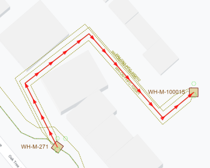

Coax Offset geometries
Displaying coax offset geometries
To have the coax offset geometries displayed on the map, you have to:
-
Add the Coax Offset Group layer to the Layers tab.
This group, analogous to the Coax Group, includes a sub-layer for cables and one for equipment. Both sublayers can be ticked on or off separately.
-
Tick on the checkbox for the objects that you want to have displayed on the map.
The offset geometry paths are displayed on the map as dotted lines, while the physical path is shown as a solid line between the structures. If multiple cables are connected to the same piece of equipment, the equipment is also displayed with a certain offset from the physical path.

Setting the offset manually
The offset is determined automatically when a new coaxial cable is added to the network. However, it is possible to determine the offset path yourself when placing the cable.
To set the offset:
-
Click the Add Object icon from the toolbar.
-
Click Coaxial cable.
The Coaxial Cable dialog appears.
-
Click Set Offset.
-
On the map draw the offset path between the structures according to your wishes.
-
Click Done in the Coaxial Cable dialog.
-
Click Save.
The offset path is drawn and the coaxial cable is placed
Changing the offset
Coaxial cable
To change the offset after the cable has been placed:
-
Select the cable of which you want to change the offset path.
You can do so by clicking the path line on the map or you can select the structure on the map and select the cable from the Cables tree view.
The cable is high-lighted on the map and the information appears in the Details tab.
- Click Edit from the Details toolbar.
The Coaxial Cable:<Cable name> opens.
- Click Update Offset.
- Redraw the offset path by moving the nodes to the desired position.
- Click Save when you have finished updating the path.
Equipment item
To change the offset of a piece of equipment:
-
Select the the structure that contains the equipment of which you want to change the offset. From the Equipment tree view select the equipment item.
The equipment is high-lighted on the map and the information appears in the Details tab.
- Click Edit from the Details toolbar.
The equipment details dialog opens.
- Click Update Offset.
- Drag an drop the equipment item at the desired position.
- Click Save.
The equipment is displayed at the updated location on the map.